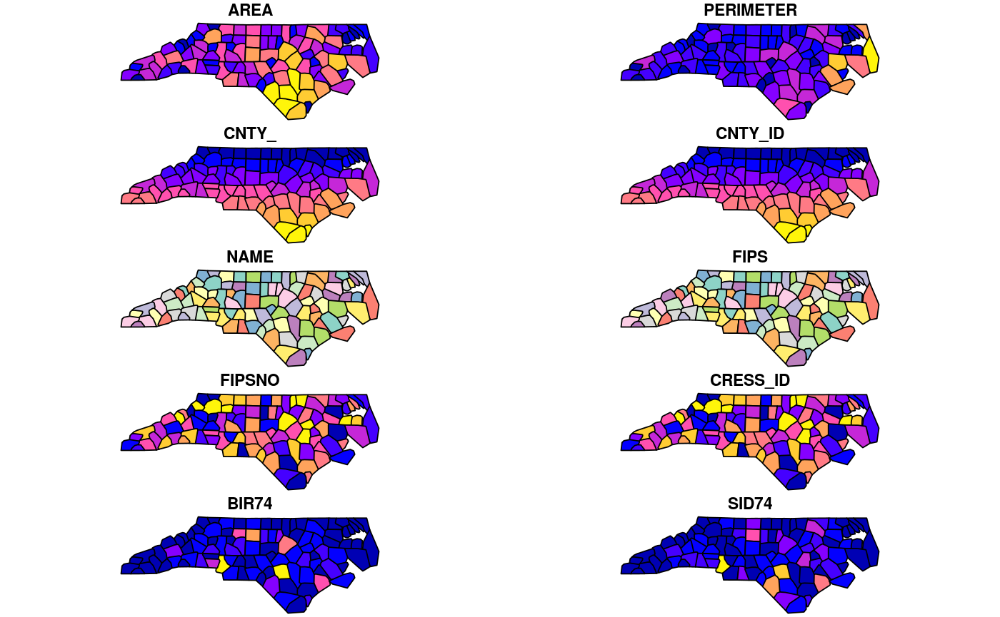
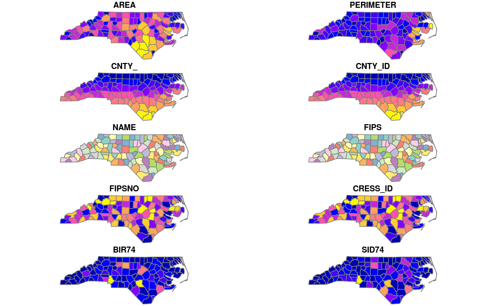
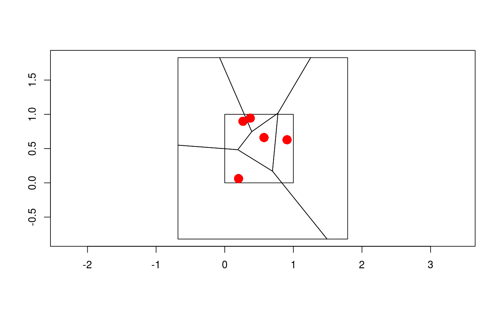
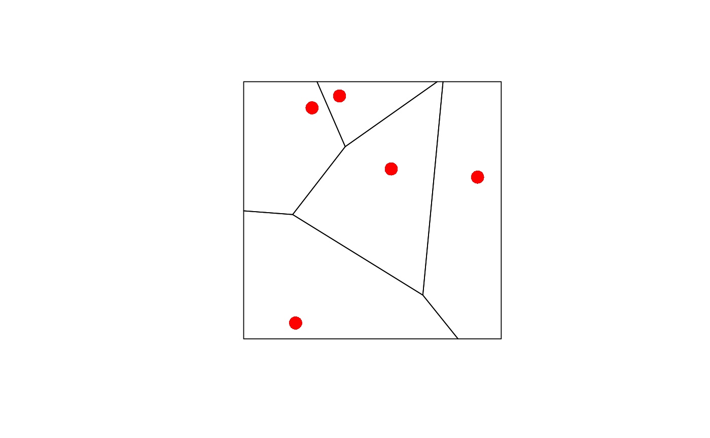
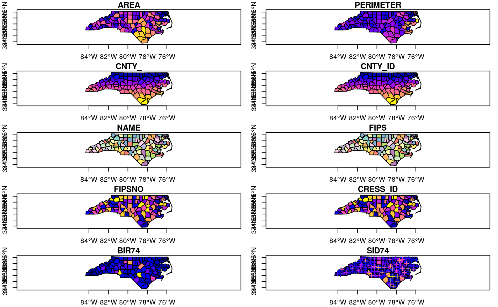
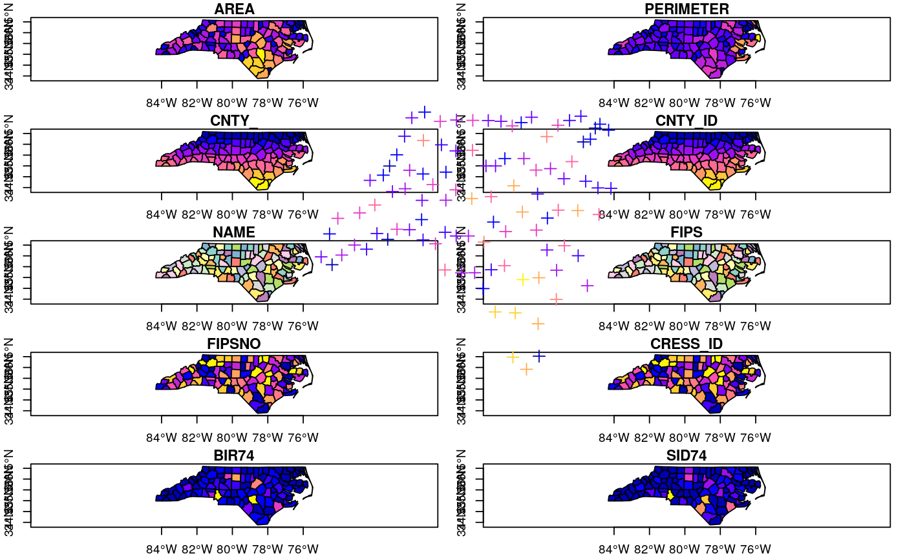

Geometric unary operations on simple feature geometry sets. These are all generics, with methods for sfg, sfc and sf objects, returning an object of the same class.
st_buffer(x, dist, nQuadSegs = 30) st_boundary(x) st_convex_hull(x) st_simplify(x, preserveTopology = FALSE, dTolerance = 0) st_triangulate(x, dTolerance = 0, bOnlyEdges = FALSE) st_voronoi(x, envelope, dTolerance = 0, bOnlyEdges = FALSE) st_polygonize(x) st_line_merge(x) st_centroid(x, ..., of_largest_polygon = FALSE) st_point_on_surface(x) st_node(x) st_segmentize(x, dfMaxLength, ...)
| x | object of class |
|---|---|
| dist | numeric; buffer distance for all, or for each of the elements in |
| nQuadSegs | integer; number of segments per quadrant (fourth of a circle) |
| preserveTopology | logical; carry out topology preserving simplification? |
| dTolerance | numeric; tolerance parameter |
| bOnlyEdges | logical; if TRUE, return lines, else return polygons |
| envelope | object of class |
| ... | ignored |
| of_largest_polygon | logical; for |
| dfMaxLength | maximum length of a line segment. If |
an object of the same class of x, with manipulated geometry.
st_triangulate requires GEOS version 3.4 or above
st_voronoi requires GEOS version 3.5 or above
in case of st_polygonize, x must be an object of class LINESTRING or MULTILINESTRING, or an sfc geometry list-column object containing these
in case of st_line_merge, x must be an object of class MULTILINESTRING, or an sfc geometry list-column object containing these
st_point_on_surface returns a point guaranteed to be on the (multi)surface.
st_node adds nodes to linear geometries at intersections without a node, and only works on individual linear geometries
nc = st_read(system.file("shape/nc.shp", package="sf"))#> Reading layer `nc' from data source `/home/edzer/git/sf/inst/shape/nc.shp' using driver `ESRI Shapefile' #> Simple feature collection with 100 features and 14 fields #> geometry type: MULTIPOLYGON #> dimension: XY #> bbox: xmin: -84.32385 ymin: 33.88199 xmax: -75.45698 ymax: 36.58965 #> epsg (SRID): 4267 #> proj4string: +proj=longlat +datum=NAD27 +no_defsplot(st_convex_hull(nc))#> Warning: plotting the first 10 out of 14 attributes; use max.plot = 14 to plot allplot(nc, border = grey(.5))#> Warning: plotting the first 10 out of 14 attributes; use max.plot = 14 to plot allset.seed(1) x = st_multipoint(matrix(runif(10),,2)) box = st_polygon(list(rbind(c(0,0),c(1,0),c(1,1),c(0,1),c(0,0)))) if (sf_extSoftVersion()["GEOS"] >= "3.5.0") { v = st_sfc(st_voronoi(x, st_sfc(box))) plot(v, col = 0, border = 1, axes = TRUE) plot(box, add = TRUE, col = 0, border = 1) # a larger box is returned, as documented plot(x, add = TRUE, col = 'red', cex=2, pch=16) plot(st_intersection(st_cast(v), box)) # clip to smaller box plot(x, add = TRUE, col = 'red', cex=2, pch=16) }#> Geometry set for 1 feature #> geometry type: GEOMETRYCOLLECTION #> dimension: XY #> bbox: xmin: 0 ymin: 0 xmax: 1 ymax: 1 #> epsg (SRID): NA #> proj4string: NA#>mls = st_multilinestring(list(rbind(c(0,0), c(1,1)), rbind(c(2,0), c(1,1)))) st_line_merge(st_sfc(mls))#> Geometry set for 1 feature #> geometry type: LINESTRING #> dimension: XY #> bbox: xmin: 0 ymin: 0 xmax: 2 ymax: 1 #> epsg (SRID): NA #> proj4string: NA#>plot(nc, axes = TRUE)#> Warning: plotting the first 10 out of 14 attributes; use max.plot = 14 to plot allplot(st_centroid(nc), add = TRUE, pch = 3)#> Warning: st_centroid does not give correct centroids for longitude/latitude data#> Warning: ignoring all but the first attributeplot(st_centroid(mp), add = TRUE, col = 'red') # centroid of combined geometryplot(st_centroid(mp, of_largest_polygon = TRUE), add = TRUE, col = 'blue', pch = 3)plot(nc, axes = TRUE)#> Warning: plotting the first 10 out of 14 attributes; use max.plot = 14 to plot allplot(st_point_on_surface(nc), add = TRUE, pch = 3)#> Warning: st_point_on_surface may not give correct results for longitude/latitude data#> Warning: ignoring all but the first attribute#>st_polygonize(st_node(l))#>#>sf = st_sf(a=1, geom=st_sfc(st_linestring(rbind(c(0,0),c(1,1)))), crs = 4326) seg = st_segmentize(sf, units::set_units(100, km)) seg = st_segmentize(sf, units::set_units(0.01, rad)) nrow(seg$geom[[1]])#> [1] 4